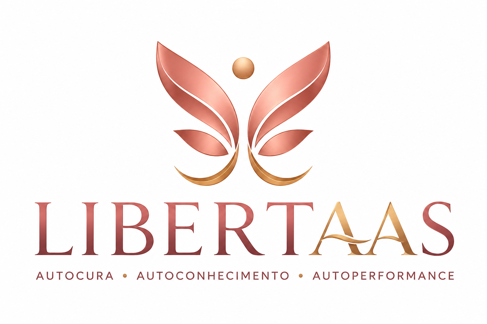

Existe uma mulher incrível dentro de você esperando para voltar a viver. Descubra como romper a dependência emocional, reconstruir sua identidade e viver relacionamentos mais saudáveis.
▶ ASSISTIR AO VÍDEO QUERO PARTICIPAR DA MENTORIATalvez você tenha passado anos vivendo para os seus filhos, para sua família e para todos ao seu redor. Mas chegou o momento de olhar para si mesma. O Libertaas nasceu para ajudar mulheres a reencontrarem sua identidade, desenvolverem inteligência emocional e viverem uma vida mais leve, sem culpa e sem dependência emocional.
QUERO COMEÇAR MINHA TRANSFORMAÇÃODescubra a verdadeira origem da sua dor emocional.
Aprenda a voltar a se escolher sem culpa.
Construa relacionamentos saudáveis sem depender da aprovação dos outros.
Márcia Ribeiro é Administradora, Terapeuta Familiar e de Casal, Pesquisadora de Inteligência Emocional e Neurociência desde 2014, Cristã, mãe, casada, Executiva de Multinacionais e Empresária.
Desde 2014 dedica sua vida ao desenvolvimento humano, ministrando palestras em todo o Brasil e ajudando mulheres a fortalecerem sua Inteligência Emocional, autoestima e identidade.
Em 2025 criou o Instituto Libertaas, inspirado em sua própria história de transformação.
Sua missão é desenvolver mulheres para a autocura, o autoconhecimento e a autoperformance emocional, conduzindo mães e mulheres a romperem a dependência emocional e viverem relacionamentos mais saudáveis.
Hoje acompanha mulheres no Brasil e em diversos países, mostrando que é possível amar os filhos profundamente sem abandonar a própria identidade.
A Mentoria Libertaas foi criada para mães e mulheres que desejam reconstruir sua autoestima, compreender suas emoções e desenvolver uma vida com mais equilíbrio, propósito e liberdade emocional.
QUERO FAZER PARTE DA MENTORIACompreenda a origem das suas dores emocionais e inicie um processo profundo de transformação.
Aprenda ferramentas práticas para controlar emoções e construir relacionamentos mais saudáveis.
Desenvolva confiança, segurança e uma nova forma de viver sua história.
Clique no botão abaixo e conheça todos os detalhes da Mentoria Libertaas.
ACESSAR A PÁGINA DA MENTORIA